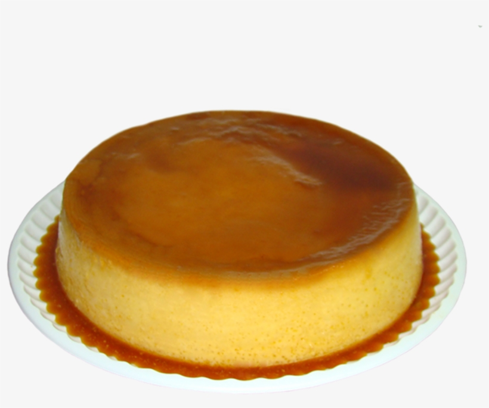

Flan

Description
Flan is a dessert that is similar to an egg custard with a sweet caramel sauce on top. Compared to other desserts, since flan is an egg
base dessert it is baked in a water bath in the oven. The amazing thing about flan is that its very customisable and can be topped
and filled with all kinds of fillings. You are able to enjoy the dessert cold like most people useually eat it or you can enjoy it warm
when it's at it's most creamiest.
Ingredients
- 1 can of Condensed milk
- 1 can of Evaporated milk
- 6 Eggs
- 1 8oz package of cream cheese (optional)
- 1 teaspoon of Vanilla extract
- 1 cup of Sugar
- 2 tablespoons of Water
Steps
- Preheat your oven to 325 degrees.
- Making the caramel sauce; In a medium-sized saucepan, place sugar and water, and boil at high heat until the sugar dissolves.
- When the sugar dissolves, reduce the heat and keep boiling until the syrup becomes light brown caramel.
This step will take about 10 minutes.
- Next, pour the caramel into your oven-proof pan, swirling the caramel to cover the bottom of the pan evenly. Let it cool.
- Place the rest of the ingredients in a blender and process until you have a smooth mixture.
- Pour the mixture slowly into the prepared pan (the same pan we poured our caramel sauce in) and cover it with aluminum foil.
- Place the pan inside a large baking pan. Add warm water to the pan until it reaches about ¾ inch.
- Place your flan in the oven for 50 minutes or until it looks firm. The flan will keep cooking while it cools,
so do not leave it in the oven for any longer.
- Let the flan cool off for a few minutes and then run a knife between it and the baking pan
- Place a large serving plate on top of the pan and invert with a quick move to avoid any liquid caramel from spilling from the pan.
- Slice the flan and place it on a plate and now its time to eat and enjoy it